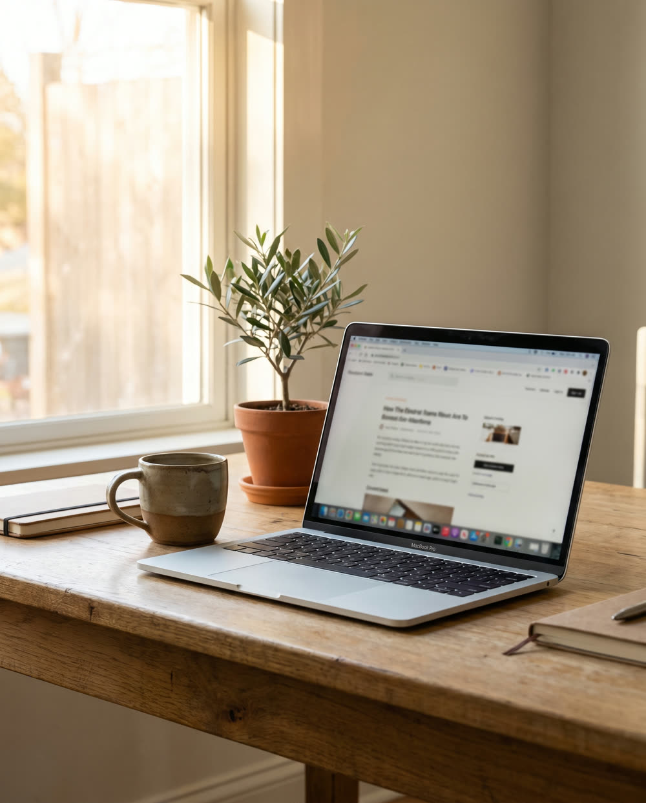

Home · Website & SEO · Gratis testwebsite
We bouwen eerst gratis een werkende preview van jouw website. Je bekijkt hem rustig, en pas daarna beslis je of je hem wilt houden. Geen verplichtingen, geen kleine lettertjes.
Kort antwoord
Een complete website die gratis blijft, maakt geen bureau voor je. Wat wel kan: bij Skyline Digital bouwen we eerst gratis een testwebsite, een werkende preview van je eigen site. Bevalt hij, dan kies je een pakket: vanaf €299 eenmalig of €29 per maand. Bevalt hij niet, dan betaal je niets. Je zit nergens aan vast.

Wat je krijgt
Een volledig werkende preview van je website, gemaakt voor jouw bedrijf. Geen schets of plaatje, maar een site die je op je telefoon en laptop kunt openen en doorklikken.
In onze algemene voorwaarden staat het zo: de gratis testwebsite is een vrijblijvende preview zonder verplichtingen, en jij beslist zelf of je hem overneemt. Pas als je dat doet, gelden de gewone prijzen.
Daarna
Vaste prijzen. Je betaalt eenmalig of per maand; bij het abonnement zitten hosting en onderhoud inbegrepen, minimaal 12 maanden. Alles staat ook op onze prijzenpagina.
Vind je de testwebsite niets, dan stopt het daar. Je betaalt niets en hoeft niets op te zeggen.
Je website op maat met meerdere pagina's, mobiel en snel, met een formulier dat rechtstreeks in je mail komt.
Alles van Horizon plus basis-SEO: technische SEO, je Google Bedrijfsprofiel, zes locatiepagina's voor je regio en Search Console gekoppeld.
Een 3D cinematic website met scroll-animaties en premium maatwerk design, inclusief beeldmateriaal.
Eerlijk vergeleken
Met een gratis websitebouwer maak je de site zelf, en blijft hij bij de bouwer. Bij een testwebsite bouwen wij, en zie je het resultaat voordat je iets betaalt.
Wil je toch zelf aan de slag of twijfel je over de prijs? Lees dan ook website laten maken goedkoop: waar zit het verschil? en website laten maken door AI of door een bureau.
Het traject
Op de aanvraagpagina kies je "Gratis testwebsite", vertel je kort over je bedrijf en vul je je gegevens in. Logo en foto's zijn optioneel.
Binnen één werkdag nemen we contact op via e-mail of telefoon. De kennismaking kan via telefoon of video, of bij ons aan de Bruistensingel in Den Bosch.
Met jouw diensten, werkgebied en stijl. Je krijgt een link en bekijkt hem live, op je telefoon en op je laptop.
Bevalt hij, dan kies je een pakket en maken we hem af. Bevalt hij niet, dan stopt het hier, zonder kosten.
Voorbeelden
Twee testwebsites die we maakten voor personal trainers, en een site die na de bouw live ging. Geen template: elke site is op maat, met de foto's en de stijl van de ondernemer.
Testwebsite voor een personal trainer. Bekijk hem live.
Testwebsite voor een personal trainer in Eindhoven. Bekijk hem live.
Een leaseplatform voor ondernemers uit Eindhoven, met een doorzoekbare collectie en een leasecalculator die direct je maandbedrag laat zien. Deze site staat live.
Meer werk zien? Bekijk ons portfolio of onze websites voor installateurs, coaches en schilders.
Veelgestelde vragen
Ja. De testwebsite is een vrijblijvende preview zonder verplichtingen. Je betaalt alleen als je besluit hem over te nemen; dan gelden de gewone prijzen uit de offerte.
Een website die voor altijd gratis blijft, maken we niet. Je kunt wel eerst gratis zien wat je krijgt. Wil je hem daarna houden, dan begint het bij €299 eenmalig of €29 per maand met hosting en onderhoud erbij.
Nee. Jij beslist zelf of je de testwebsite overneemt. Doe je dat niet, dan hoef je niets op te zeggen en betaal je niets.
Nee. Met een paar gegevens over je diensten en werkgebied maken wij de teksten; jij past aan wat niet klopt. Zonder logo of foto's kiezen wij passend beeld en gebruiken we wat er op je huidige website staat.
Een website is gemiddeld in 4 tot 8 weken klaar, afhankelijk van de omvang en hoe snel we foto's en feedback ontvangen.
Nee. Ons kantoor staat in 's-Hertogenbosch, maar we bouwen websites in heel Nederland, bijvoorbeeld in Den Bosch, Oss, Waalwijk en Uden. Bekijk ook alle regio's.
Lees verder: Website & SEO · prijzen · wat kost een website laten maken
Bronnen: Algemene voorwaarden Skyline Digital, artikel 3 en 5 · Wix: Free Web Hosting · Wix Help Center: Exporting or Embedding Your Wix Site Elsewhere
Vraag een gratis testwebsite aan: je ziet eerst het resultaat, dan beslis je. Je hoort binnen één werkdag van ons.